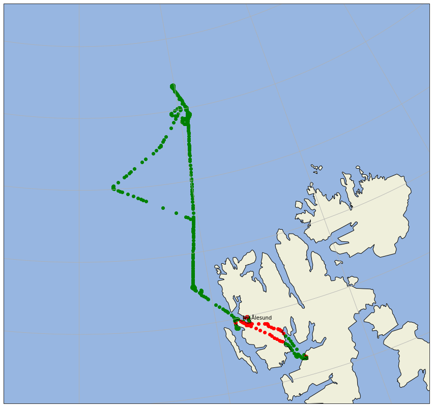

Land-ocean mask¶
In this example we show how a land ocean mask can be applied to the flight path. The decision is based on cartopy.io.shapereader.natural_earth(resolution='10m', category='physical', name='land'). All functionality is packed into a routine is_land(), which is part of the ac3airborne toolbox.
from ac3airborne.tools import is_land as il
import ac3airborne
from simplification.cutil import simplify_coords_idx
For example check if Cologne, Germany is on land:
lat = 50.938056
lon = 6.956944
il.is_land(lon, lat)
True
Now plot the flight with different colors over land or over ocean:
import matplotlib.pyplot as plt
import cartopy.crs as ccrs
import cartopy.feature as cfeature
import numpy as np
def simplify_dataset(ds, tolerance):
indices_to_take = simplify_coords_idx(np.stack([ds.lat.values, ds.lon.values], axis=1), tolerance)
return ds.isel(time=indices_to_take)
cat = ac3airborne.get_intake_catalog()
ds_gps = cat['P5']['GPS_INS']['ACLOUD_P5_RF14'].to_dask()
ds_gps = ds_gps.isel(time=slice(1,-1))
dsreduced = simplify_dataset(ds_gps, 1e-3)
# prepare for plotting
proj = ccrs.NorthPolarStereo()
extent = (-5.0, 24.0, 78.0, 83.0)
fig = plt.figure(figsize=(15, 15))
ax = plt.axes(projection=proj)
ax.set_extent(extent)
ax.add_feature(cfeature.OCEAN)
ax.add_feature(cfeature.LAND)
ax.gridlines()
ax.coastlines()
nya_lat = 78.924444
nya_lon = 11.928611
ax.plot(nya_lon, nya_lat, 'ro', transform=ccrs.PlateCarree())
ax.text(nya_lon, nya_lat+0.05, 'Ny-Ålesund', transform=ccrs.PlateCarree())
#for x, y in zip(ds_gps.lon, ds_gps.lat):
for x, y in zip(dsreduced.lon, dsreduced.lat):
if il.is_land(x, y):
ax.scatter(x, y, transform=ccrs.PlateCarree(), c='red')
else:
ax.scatter(x, y, transform=ccrs.PlateCarree(), c='green')
